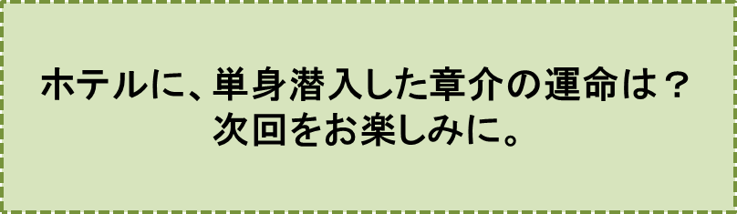

♪♪♪“タッ、タッ、タ、ターアンー”
“タッ、タッ、タ、ターアンー”
“タン、タン、タン、タン”
“タッ、タッ、タッ、ターン、ターン”♪♪♪
と軽やかにメロディーを口ずさみながらホテルに近づきます。
章介は、心の中で叫びます。
“えっへん！ ボクは今まで、喧嘩で一度も負けたことがない。しかも今日は、ポケットに飛び道具の石を忍び込ませている。ボクはクラス一番の速球投手だぞ！ この石がある限り、あのフロントの男、化けものコウモリにも負けない。……それに、ボクは誰よりも身軽に動きまわることができるんだ。まるで牛若丸のように……”
章介は、自信たっぷりで、不敵な笑みを何度も浮かべます。
ホテルの中は、薄暗く息が詰まりそうでした。あたりがはっきり見えるようになるまで、章介は、用心深く、壁にぴったり身体を寄せていました。
こうしている間でも、あの恐ろしいフロントの男、化けものコウモリのことは、片時も忘れていませんでした。針の落ちる程の音でも聞き逃すまいと、聞き耳を立てています。
ホテルの中は“完全な静寂”が支配していましたが、この静寂は、決して安堵（あんど）には結びつきませんでした。
いや、むしろ、底の知れぬほどの大きな不安と寂しさとなって、章介を襲います。
彼は、この不安な気持ちを払いのけるように、ホテルの中を歩き始めました。
中央の大きな階段は、明るく照らされていましたので、廊下の奥の方に見える階段を上ることに決めました。
この階段はとても狭く、木製のお粗末なものです。
章介は、階段を一つ上る毎に、ひどく後悔し始めました。
と申しますのも、階段を上る度に、“ぎしっ”“ぎしっ”という鈍い音が高くなり、次のステップを踏み出す勇気が全く無くなってしまったからです。
息を飲んで、足をそっと踏み出してみても、階段は容赦なく
“ぎいっ！”
と、大きな音をホテル中に響かせます。
ようやく、階段の中程にあって、身体一つが、やっと出せるほどの窓の所まで、たどり着きました。
章介は、救われたように窓の外を眺めます。
モミノキやヒノキが風に大きく揺れ動き、その上に青空が見えます。スギノキやモミノキ、ヒノキなどの常緑樹が送ってくれる心地よい風が、頬（ほお）に当たります。
彼は、顔を紅潮させ、身を乗り出すようにして窓の外を眺めました。章介には、
“狭い暗黒の世界から何日ぶりかに逃れ出て、目の中に飛び込んできた雲一つない青空”
のように見えます。彼は、心の底からの感動を抑えることができませんでした。思わず
「おーい。青空よ！」
と大きな声で叫んでしまいました。
慌ててしゃがみ込みましたけれど、その声は、無情にも奥へ奥へと伝わっていき、コダマのように跳ね返ってきます。
“ぐずぐずしていたら、とっつかまってしまう。リンゴ泥棒は、どこに隠れているのか分からないんだ。用心しよう”
自分自身にこう言い聞かせ、再び階段を上り始めました。
一足ごとに階段は、更に大きな音を立てましたので、足がすくんでしまい、途方に暮れた面持で、階段の上の方に目をやりました。
たまらないほどの静けさが、ホテルを包んでいます。
まさに、このときです。章介は、全身の血が凍りつくほどの恐怖を感じました。
無理もありません。ほんの近くで、階段の“ぎし”“ぎし”と鳴る音……、確かに誰かが、階段を下りてくる足音を耳にしたのです。
章介は、自分の身体が何かに強くしばられたように、もはや動かなくなってしまった、と感じました。武器としてポケットに忍ばせてきた石も、手がこわばって、取り出すことができません。
“ぎしっ”“ぎしっ”“ぎしっ”
という音は、いよいよ重く、そしていよいよ厳しく、章介の胸に迫ってきます。
足音の主が現れるまで、ほんの十数秒の時間であったかも知れません。
……しかし章介にとっては、実に長い時間、一日、二日どころではない、とても長ーい、時間のように思われたでしょう。
“足音はするけれど姿は見えない……。あぁ、もう、泥棒であれ、フロントの男、あの化けものコウモリであれ、とにかく姿を見せてほしい……”
章介は、心の底から、神様に祈りました。
♪♪♪♪コーヒーブレイク♪♪♪♪
